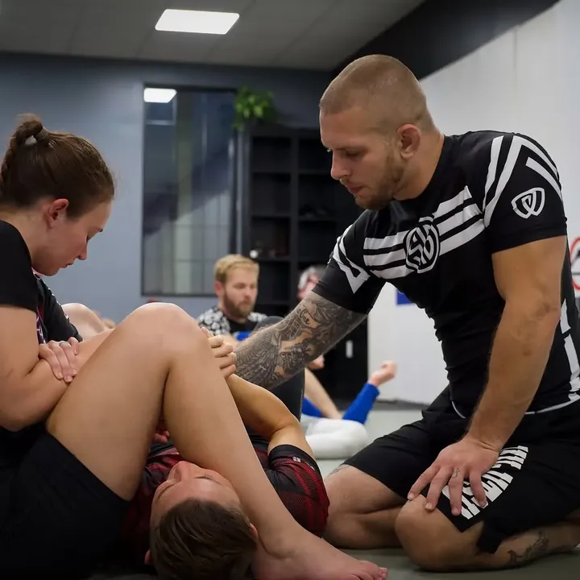

Wrestling for jiu jitsu
Collar ties, hand fighting, single legs, and body locks feature throughout his wrestling series. The emphasis is on connecting standing exchanges to takedowns and useful positions for grappling.
The coach behind Precision
Black belt. Competitor.
BJJ Fanatics instructor.
IBJJF · Adult middleweight results
Head instructor and co founder of Precision Jiu Jitsu in Hudson, New Hampshire.
His background
Shawn first encountered jiu jitsu through older cousins who shared techniques at family gatherings. He began training full time in mixed martial arts in 2011, building a 3 win, 1 loss record before shifting his focus to jiu jitsu in 2014.
That path led to superfights, tournament competition, and the coaching work that now anchors Precision. Today, Shawn leads the Hudson academy alongside fellow black belt Alex West, helping beginners find their footing and experienced grapplers keep developing their game.
His BJJ Fanatics instructionals take that work beyond the gym. Across wrestling, guard passing, top control, and submissions, his published material explains the positions and connections that make up a complete no gi game.
Inside the technique
Shawn's published curriculum gives a clear picture of his technical focus, from the first grip to the finishing position.
Collar ties, hand fighting, single legs, and body locks feature throughout his wrestling series. The emphasis is on connecting standing exchanges to takedowns and useful positions for grappling.
His top game material covers movement between side control and mount, keeping control through transitions, and finding submissions as opponents react. Small changes in weight and positioning are central to the approach.
His armbar and guard instructionals explore entries, sweeps, and follow ups from several positions. Rather than treating each finish in isolation, the curriculum follows how one opportunity leads to another.
The name behind the clips
Air Jail is the name Shawn uses for clips where he lifts an opponent who remains attached during a grappling exchange. In his Fighting for Your Life interview, he traces the nickname to his responses to buggy choke attempts and the reaction to those clips on Instagram.
For a broader look at his top game, Precision Top Stuff covers side control, mount, north south and connected submissions. BJJ Fanatics connects that course with the pressure and control behind his widely shared clips.
Watch Shawn explain where the name came from in this short excerpt from the Fighting for Your Life Podcast. The complete interview is linked below.
Professional competition
Shawn competed for the Philadelphia Phenoms in the Professional Grappling Federation's 2026 Season 9 and reached the eight athlete playoff field.
The league's official match history records finishes with arm attacks, a kneebar, an ankle lock, and an arm triangle. These selected results offer a look at that range.
View Shawn's official PGF record ↗Selected Season 9 submission wins
Results from the Professional Grappling Federation. See the official record for the full match history.
Learn beyond the gym
Study a position in depth, revisit the details, and bring new questions back to the mats. Compare all seven courses, explore the public previews and find the material that fits your game.
Guard passing · 2 volumes · 33 chapters
A leg drag passing system covering control, responses to guard recovery and transitions into other passes, back takes and front headlocks.
Top control · 2 volumes
Side control and mount attacks, positional transitions and connected submissions, including arm attacks, triangles and kimuras.
Guard attacks · 4 volumes
Shawn’s fifth BJJ Fanatics installment. Sweeps and attacks from butterfly half, knee shield and related half guard positions, connecting guard structures to offense.
Seated guard · 4 volumes
His fourth BJJ Fanatics installment. Seated guard attacks against standing and kneeling opponents, combining foot sweeps, wrestling entries, butterfly attacks and takedown finishes.
Guard passing · 3 volumes
Passing options from headquarters, including knee cuts, drags, body locks and responses to reactions, with live round breakdowns.
Standing wrestling · 4 volumes
Standing wrestling for grappling, from ties and leg attacks to body locks, throws, trips and counters.
Submissions · 4 volumes
Armbar entries and control from mount, side control, guard and standing, with transitions and responses to common escapes.
Full course purchases, current prices and reviews are handled by BJJ Fanatics. The Leg Drag curriculum lists 33 chapters, including introductory and closing sections.
Reviews & coverage
Independent course reviews and reporting on Shawn’s professional competition.
A review of the passing system and its connected positions.
Read the review ↗ BJJ World · Course reviewA closer look at the top control instructional.
Read the review ↗ Let’s BJJ · Course coverageAn independent guide to the armbar course and its curriculum.
Read the article ↗ Jits Magazine · CompetitionDraft reporting and analysis of the PGF field.
Read the coverage ↗ Jits Magazine · CompetitionResults and reporting from the league’s fifth week.
Read the recap ↗
Beyond the academy
Shawn shares technique with an Instagram audience of more than 276,000 followers. Follow his technique clips and visit the complete instructional library for a closer look at his teaching.
For a longer look at his approach, his July 2025 conversation with the Forever White Belt podcast covers wrestling's influence on his jiu jitsu, coaching, competition preparation, and training culture.
Shawn teaches at Precision Jiu Jitsu in Hudson, New Hampshire, alongside Alex West, a black belt under Shawn.
“They really invest in people who want to be invested in.”
Booking enquiries
Hosting a seminar or looking for focused training? Contact Precision Jiu Jitsu to ask about Shawn’s availability, format and booking details.
For a seminar, include your academy, location, proposed dates and group size. For private training, share your experience, goals and preferred dates.
Choose what you have in mind.
Prefer a call? (603) 459 3610
A few more details
Shawn Melanson is a no gi jiu jitsu black belt, head instructor and co founder of Precision Jiu Jitsu, a BJJ Fanatics instructor and a professional grappling competitor. His teaching includes wrestling, guard passing, top control, arm attacks and guard offense.
Shawn teaches at Precision Jiu Jitsu in Hudson, New Hampshire, alongside fellow black belt Alex West. For seminar and private training availability, use the booking enquiry form.
Choose “Enquire about a seminar” in the booking enquiry section and fill out the form. Include your academy, city, proposed dates and expected group size. Precision Jiu Jitsu will discuss Shawn’s availability and booking details with you. You can also ask about private training there.
Visit the instructional library to compare all seven courses and watch public previews. Full course access is handled by BJJ Fanatics.